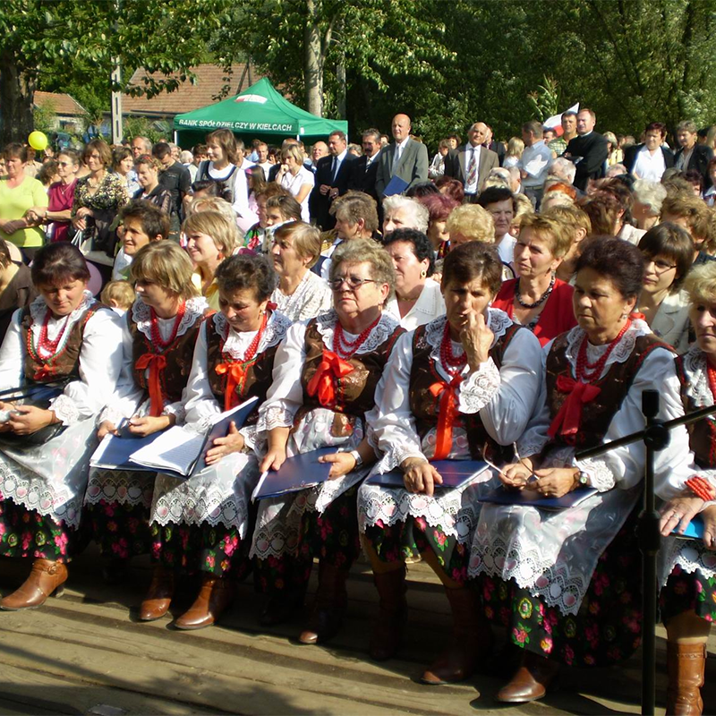
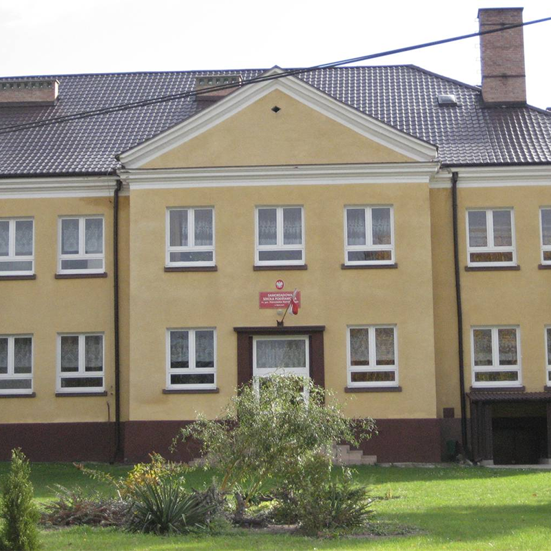
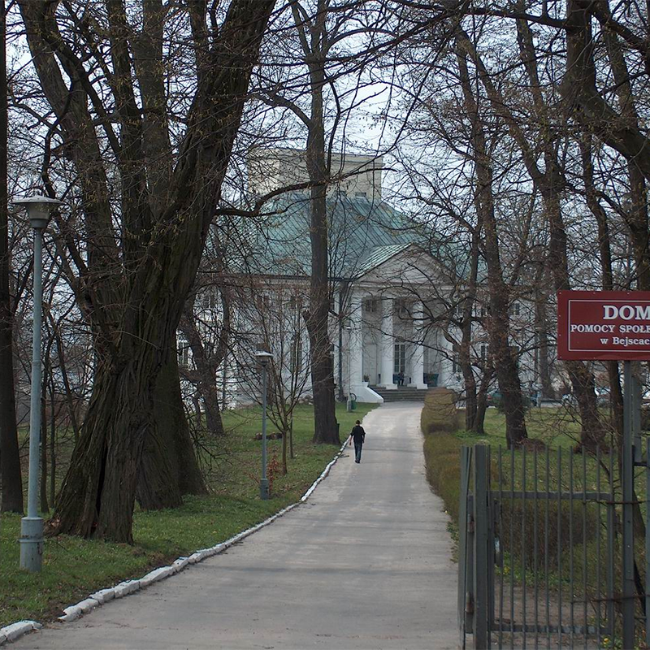
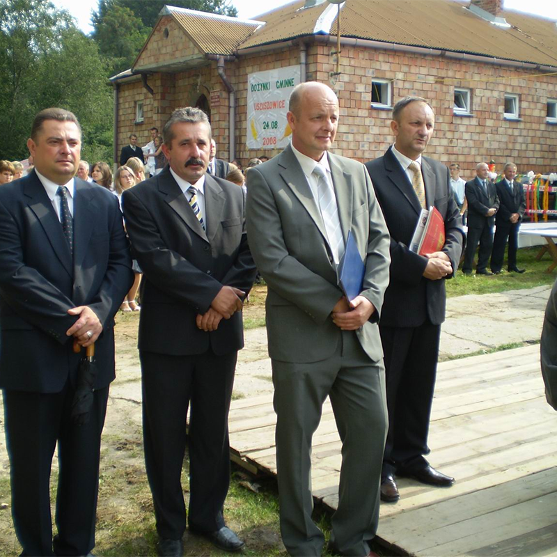

Bejsce
Wieś o 1000-letniej tradycji, w X w. istniał tu prawdopodobnie gródek rycerski z kaplicą, potem kościołem. W dokumencie biskupa krakowskiego Lamberta z r. 1063 jest informacja o dziesięcinie dla kościoła bejskiego.
Kolejny, większy kościół był konsekrowany przez biskupa krakowskiego Pełkę w r. 1190. Wreszcie, w roku 1340Ostasz z rodu Firlejów ufundował obecny kościół pw. św. Mikołaja, który w kolejnych wiekach został rozbudowany (najstarsza część to dzisiejsze prezbiterium z zakrystią) i poszerzony – najpierw o późnorenesansową kaplicę pw. NMP (Firlejowską), konsekrowaną w r. 1600 oraz – pochodzącą z połowy XVII w.,barokową kaplicę św. Anny. W prezbiterium odkryto duże fragmenty polichromii gotyckiej z około 1400 r., obecnie po konserwacji, przedstawiające sceny biblijne, ilustrujące mękę Chrystusa oraz alegoryczne malowidła obrazujące grzechy główne. Kaplica pw. NMP jest kaplicą grobową wojewody krakowskiego Mikołaja
- 
- 
- 
- 